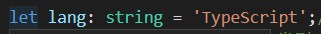
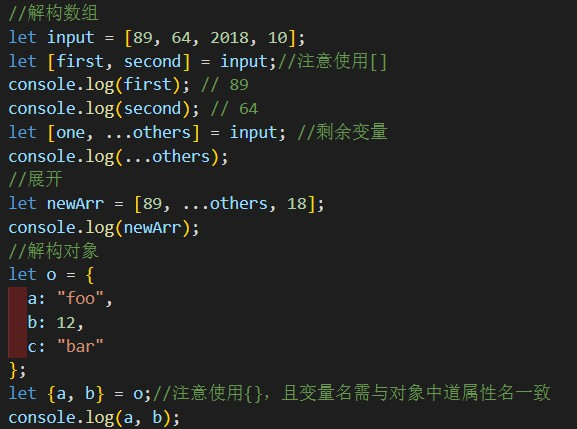
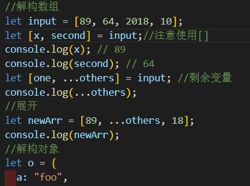

我的个人感觉，就是可以在转译为纯JavaScript,前把该报的错报掉。也就就是说比JavaScript更严谨。
用let或者const,const声明的话是常量不可以改变的常量；
声明变量类型，在变量名后面加":"，然后注明类型名，像这样：

感觉有点像切片，但又不是；
 
把first改为了x,这说明这个解构其实就是给对应数组元素赋予了一个变量名
就是那个"...others"有点特别。
以上是数组。
当是对象时，就用{}，里面填你需要的属性名，就可以取出来了。
函数定义:
function 函数名(参数名=value,参数名:参数类型,参数名?:参数类型)：返回值类型{
return xxx;
}
返回值可以不写，我试过；写上可读性更强。
参数名后有问号的是参数变量，也就是可有可无，必须写在最后。
参数名后是等号的是默认参数，位置哪都行。
匿名函数定义：
let myAdd = function(x: number, y: number): number { return x + y; };
function greeting(firstName: string, ...restName: string[]) {
return `Hello ${firstName} ${restName.join(' ')}!`;
}
...restName:string[]
用来处理你不知道参数个数的情况。
我的理解就是函数的一种简写形式 ： 函数名=（）=>{}
（）放参数，{}放函数体;
类的定义：
class 类名{
属性名:类型;
constructor(参数名：参数类型){//构造函数，一般对对象进行初始化。
}
}
类的使用：
let 对象名=new 类名（参数名：参数类型）；//调用构造函数进行初始化
类的属性和函数的访问权限：
类中的属性和函数都有访问权限，默认为public即全局可访问，其次为protected即可在类的内部和其子类的内部可访问，最后为private，只能在该类内部可访问。
私有属性或函数以下划线"_"打头。
存取器：getter,setter用来操作私有属性。
静态属性：
属于类的属性，可以通过类名直接调用。
继承：
可以通过extends关键字继承其它类，从而成为其子类.
对于大型的项目，我们需要使用模块进行管理。每个 .ts 文件就是一个模块，通过 export 来对外部模块暴露元素，通过 import 来引入模块。